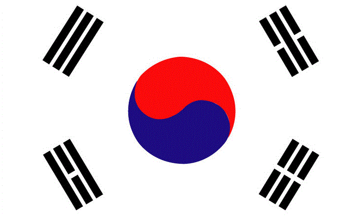

역사
한국의 뿌리는 1897년에 수립된 대한제국이다. 고종 황제는 나라 이름을 조선(朝鮮)에서 대한(大韓)으로 고치고, 연호를 광무(光武)라 정하고, 스스로 황제의 자리에 올랐다. 최초의 근대적 헌법인 대한국 국제를 반포하였고, 미국, 영국, 독일, 프랑스, 이탈리아, 러시아, 일본, 청나라 등과 수교하였다. 광무개혁을 단행하여 신식군대를 설치하고, 근대적 사법·토지 제도를 도입하고, 상공업을 진흥하고, 근대적 병원과 학교 및 은행 등을 설립하였다. 해외에 유학생을 파견하여 근대 산업기술을 습득하게 하고, 제조·철도·운수 등 여러 분야에서 근대적 기업과 공장을 설립하였다. 그러나 대한제국의 자주적 근대화 노력은 1895년 청일 전쟁으로 일본의 영향력이 커진 이래 간섭을 받아왔으며, 1904년에는 러일전쟁에서 일본이 승리한 뒤로 일본의 한국 병합이 본격화되었다. 1905년 을사조약을 무력으로 체결하여 외교권을 박탈하고, 1907년 고종 황제를 폐위하고, 1910년 한일 병합 조약을 통해 국권을 빼앗기며 일제 강점기로 전환, 근대적 자주국가라는 목표는 사라지고 말았다.
1919년 3월 1일, 한국인들은 민족대표 33인의 독립선언서 낭독을 시작으로 독립을 위한 3·1운동을 펼쳤다. 이 운동은 대체로 각 지역에서 정기적으로 열리던 장(시장)의 개장일에 맞추어 전국으로 퍼져 나갔다. 일본은 시위를 무력으로 진압하였으나 폭압 통치 방식의 한계를 느껴 헌병 경찰 통치에서 문화 통치로 전환하였다. 이는 국내외 독립운동의 새로운 전환점을 마련하게 된다.
4월 11일, 3·1운동의 정신을 이어받아 중화민국 상하이에서 대한민국 임시정부가 수립되었다. 임시정부는 대한민국 임시 헌법을 제정하여 대통령제와 3권 분립을 채택하고 한국의 독립을 위하여 외교·군사적으로 노력했다. 그러나 독립운동 노선의 갈등으로 여러 인사들이 빠져나가면서 국무령 중심의 집단지도체제로 전환하고, 일제의 방해까지 겹쳐 온갖 고난과 어려움을 겪었다. 1930년대 일본의 중국 침탈이 가속화되자 내륙으로 청사를 이전하여 중일전쟁이 한창이던 1940년에는 충칭에 정착하였다.
이후 김구를 주축으로 주석중심제로 재정비하고 조소앙의 삼균주의를 건국강령으로 채택하였다. 한국 광복군도 조직하여 1941년 12월 태평양 전쟁을 일으킨 일본에 선전포고하고 1942년 2월에는 대독 선전포고까지 하여 연합군의 일원으로 참전하고자 하였다. 1942년에는 좌파계열인 조선민족혁명당의 김규식, 김원봉 세력과 김성숙, 유림 등의 무정부주의자들이 임시정부에 합류하여 민족통일전선 형성의 기틀이 마련되었다. 1943년 버마 전선의 영국군과 연합작전을 전개하고자 공작대를 파견하여 일본군 포로 취조 및 암호 번역, 선전 전단 작성, 대적 회유 방송 등을 하였다. 미국 OSS와도 연계하여 1945년 9월을 기한으로 국내 진공 작전을 준비했으나, 8월 15일 일본이 항복하여 성사되지 못했다. 현행 대한민국 헌법 전문에는 대한국민이 3·1운에 따라 건립된 대한민국 임시 정부의 법통을 계승한다는 문구가 삽입되었다.
1945년 8월 15일, 일본제국이 미국에 무조건 항복함으로써 대한민국은 일제 치하로부터 벗어나 광복을 맞이하였다. 그러나 광복 이후 한반도는 얄타회담에서 이루어진 비공식적 합의에 따라 소련과 미국의 신탁 통치하에 들어갔다. 1945년 9월에는 한반도의 북위 38도선을 경계로 남쪽은 미군이, 북쪽은 구 소련군이 포고령을 선포하여 각각 군정을 실시하면서 한반도는 남과 북으로 분단되었다.
1948년 1월부터 한반도의 정국은 단독 정부 수립론과 남북 협상을 통한 정부 수립론을 놓고 의견이 갈라서게 되었다. 그러나 1948년 2월 38선 이북에서는 북조선인민위원회를 구성하고, 조선인민군을 창건하면서 분단은 사실상 불가피하게 되었다. 5월 10일 38도선 이남에서만 제헌 의원 총선거가 실시되어 제헌 국회가 탄생하였고, 같은 해 7월 17일에는 초대 헌법인 대한민국 제헌 헌법이 구성되었다. 7월 22일에는 국회의 간접 선거로 이승만이 초대 대통령, 이시영이 초대 부통령으로 선출되었고, 8월 15일에는 대한민국 정부 수립이 선포되었다.
조선민주주의인민공화국의 김일성은 남침을 기도하여 공산주의화 하려는 야망을 실현하고자 준비하였다. 소련의 지도자인 이오시프 스탈린의 승인을 받자, 소련에서 지원받은 수십대의 소련제 탱크를 앞세워 대한민국을 1950년 6월 25일 새벽 4시에 침공했다. 당시 대한민국은 야포와 전투기 등 모든 것이 압도적으로 열세였기 때문에 조선인민군이 침략한 3일만에 수도인 서울을 인민군에게 빼앗기게 된다. 한국군은 결국 밀려나 낙동강 방어선을 최후의 배수진으로 정하고 버티었고, 이 과정에서 많은 사상자와 인명피해가 초래되었다. 하지만 UN군이 파병으로 지원하고 UN군 총사령관 더글러스 맥아더가 9.15일 인천 상륙 작전을 벌여 조선인민군에 반격을 시작하자 얼마 지나지 않아 대한민국은 9월 27일에 서울을 탈환해냈다. 10월 1일에는 38도선까지 수복하여 원점으로 돌아갔다. 이후 한국과 UN군은 거듭해서 10월 26일에는 압록강까지 올라갔으나 곧 이어 중화인민공화국이 인해전술을 펼치며 참전하고 소련이 군사를 지원하여 전세가 다시 역전되었고 전쟁은 장기화되었다. 이후 38도선 인근 중부 지방에서 교착을 거듭하던 1953년 7월 27일에 휴전협정이 오전 10시에 체결된 후에 효력이 발생한 22시에 완전히 전투가 종료되고 군사 분계선이 형성되면서 오늘날까지 휴전 상태가 이어지고 있다.
하지만 한국 전쟁 이래 일명 '한강의 기적'이라고 불리는 높은 경제 발전을 이룩하며, 1990년대에 이르러 세계적인 경제 강국으로 발전하였다.
2015년 구매력 기준 1인당 국민 총소득(GDP)은 36,601달러로 세계은행에서 고소득 국가로 분류되었고, 2016년 유엔의 인간 개발 지수(HDI) 조사에서 세계 18위로 '매우 높음'으로 분류되었다.
또한, 국제 통화 기금(IMF)에서는 대한민국을 선진 경제국으로 분류하고 있다.
대한민국의 명목 국내 총생산(GDP)은 2016년 1조 4112억 달러이다.
또한, 대한민국은 주요 20개국(G20), 경제 협력 개발 기구(OECD), 개발 원조 위원회(DAC), 파리 클럽과 같은 기구에서 회원국으로 활동하고 있다.
